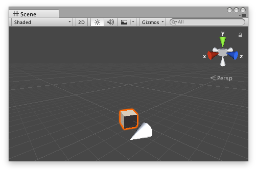

Handles.Slider
Parameters
| position | The position of the current point in the space of Handles.matrix. | |
| direction | The direction axis of the slider in the space of Handles.matrix. | |
| size | The size of the handle in the space of Handles.matrix. Use HandleUtility.GetHandleSize if you want a constant screen-space size. | |
| snap | The snap increment. See Handles.SnapValue. | |
| capFunction | The function to call for doing the actual drawing. By default it is Handles.ArrowHandleCap, but any function that has the same signature can be used. |
Returns
Vector3 The new value modified by the user's interaction with the handle. If the user has not moved the handle, it will return the position value passed into the function.
Description 描述
Make a 3D slider that moves along one axis.
This method will draw a 3D-draggable handle on the screen. The handle is constrained to sliding along a direction vector in 3D space.

Slider handle in the Scene View.
Add the following script to your Assets folder as SliderExample.cs and add the SliderExample component to an object in a Scene.
using UnityEngine;
[ExecuteInEditMode] public class SliderExample : MonoBehaviour { public Vector3 targetPosition { get { return m_TargetPosition; } set { m_TargetPosition = value; } } [SerializeField] private Vector3 m_TargetPosition = new Vector3(1f, 0f, 2f);
public virtual void Update() { transform.LookAt(m_TargetPosition); } }
Add the following script to Assets/Editor as SliderExampleEditor.cs and select the object with the SliderExample component.
using UnityEditor; using UnityEngine;
[CustomEditor(typeof(SliderExample)), CanEditMultipleObjects] public class SliderExampleEditor : Editor { protected virtual void OnSceneGUI() { SliderExample example = (SliderExample)target;
float size = HandleUtility.GetHandleSize(example.targetPosition) * 0.5f; float snap = 0.1f;
EditorGUI.BeginChangeCheck(); Vector3 newTargetPosition = Handles.Slider(example.targetPosition, Vector3.right, size, Handles.ConeHandleCap, snap); if (EditorGUI.EndChangeCheck()) { Undo.RecordObject(example, "Change Look At Target Position"); example.targetPosition = newTargetPosition; example.Update(); } } }